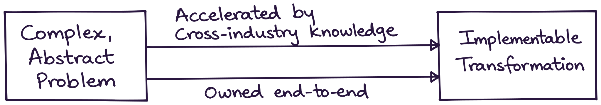
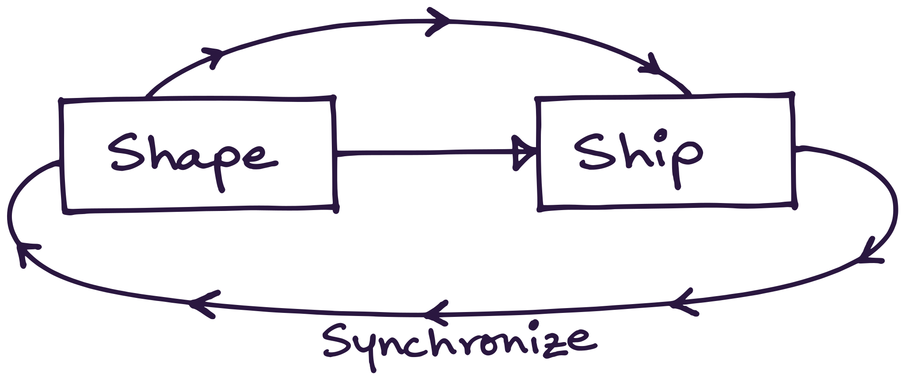

Give me the problem that has no shape yet.

Organisations don’t fail at strategy. They fail at translating it into work.
Faster than a hire can ramp.

Transformation rarely breaks on the strategy. It breaks in translating and executing it.
Meet the hard decisions in a classroom, not a board review.

Frameworks are easy to memorise and useless under pressure. Judgement is the only thing that survives the room.
Product Management: from my perspective

Tell me the problem. I’ll tell you honestly if I’m the right fit.
0→1 strategy | Product-to-platform thinking | VP-level judgement, without a full-time hire | Discovery and framing | Go-to-market strategy | AI product advisory
Swanubhava™ trains how product people behave when it gets hard.
Most product management training teaches what a product manager delivers: PRDs, roadmaps, backlogs. Swanubhava™ trains the behaviour behind the work - and measures it by the decisions people make.
Start by finding the gaps. Finish by checking they closed.
For corporate teams, MBA programmes and individuals. The same method measures before training and after it, so the movement is visible.
Find the gaps
Each person rates themselves on the anchors, then works through a scenario and writes what they would actually do. The trainer rates that answer against the rubric. The gap between the two - how you see yourself and what you do under pressure - is where we start.
Work the anchors that matter
Scenario-based sessions on the priority anchors, as live workshops, a cohort or 1:1 coaching. Priorities come from the gaps, not from a guess.
See what moved
A different scenario on the same anchors, rated the same way. You see whether the gap closed.
Strings is the Swanubhava™ diagnostic. Its ratings guide development conversations; they are not a hiring test or a validated psychometric score. For formats, group sizes and pricing, get in touch.
What we train, how we train it, and why it sticks
Pillars, anchors and behaviours
Three pillars of product manager behaviour, eight behavioural anchors, and the ground-level behaviours under each.
See the content ↓ Delivery · how we trainScenario-based learning
A realistic situation, the decisions you make in it, and the consequences you live with.
See the delivery ↓The Recognition-Primed Decision model
Better behaviour and decision making in real life - by learning to read the cues, recognise the pattern and simulate what happens next.
Three postures, eight anchors
Three postures of a product manager: on their own, then the boundaries they hold, then the relations they build. Each pillar has behavioural anchors; each anchor breaks into ground-level behaviours, trained as scenarios. Tap an anchor to hear what it sounds like.
Behaviours overlap by design - real situations rarely test just one. Inspired by the ICF Core Competencies and rebuilt for product work.
Every scenario runs the same way
Each box is a real moment from one scenario - Two days to sign-off (product analysis, anchor 7). Click a box to see it.
The whole scenario, start to finish. About three minutes.
Built on how experts actually decide
of 156 decisions by experienced fire commanders involved comparing options. They recognised the situation and acted.
Klein, Calderwood & Clinton-Cirocco, 1986studies of simulation-based learning showed a large positive effect on complex skills.
Chernikova et al., 2020People remember what they produce better than what they read - so learners write their own response before seeing the model answer.
Bertsch et al., 2007The method is research-backed. Swanubhava™ itself has not been independently evaluated yet; pre and post ratings track each cohort.
Swanubhava™ grew out of the weekly case-solving forum I have run across three organisations.
Swanubhava™ is a trademark of Gaurav Joshi. The Swanubhava framework, including its three pillars, eight behavioural anchors inspired by the International Coaching Federation (ICF) standards, behavioural traits and scoring metrics, is Copyright © 2026 Gaurav Joshi. All rights reserved.
He has a unique talent for bridging vision and execution, helping teams move from concept to delivery with clarity and purpose.
We can tell him 'what needs to be achieved' and he will figure out HOW and WHY. He is a great asset for any problem solving company and extremely dependable.
...as a mentor he has always tried to help me become a better version of myself rather than trying to mold me to his perspective.